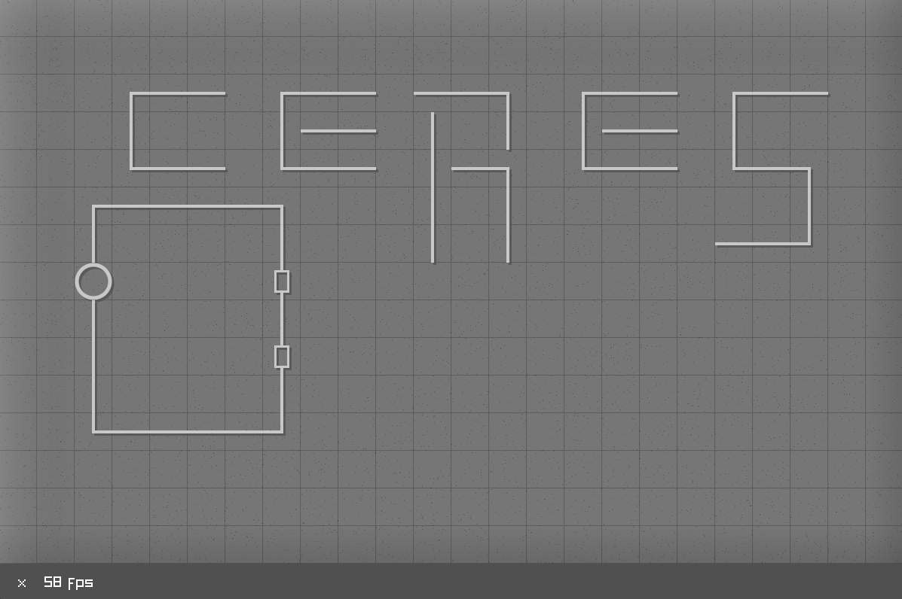

A game in which you solve puzzles by building (analogue) circuits.
Making games is fun. Also, it might be useful to teach others about circuits and learn more about them myself.
Using (1) the C programming language & raylib to write the code, (2) Paint.NET to create sprites and (3)
ngspice as a simulation
engine.
I am fairly set on 1 and 2, but 3 is liable to change.
According to the Git repository’s commit history, I started this project on the 25th of January, 2025. The plan is to release the game some time in summer 2025. I expect to do the bulk of the development work before April.
The source code is on my GitHub. Read it at
your own risk! I promise to only push stuff that builds, so if you are
on Windows, use Virtual Studio Code and have MinGW in your Path
environment variable, cloning and pressing “Run” should just work.
I am posting this because having mentioned a project publicly will
force me to finish it.
I don’t plan on writing my own circuit simulation because I’ve done it
before (you
can too!), and it would require extra work for a worse
product.